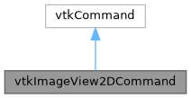

|
MUSICardio 4.2
MUSICardio application created by Inria Epione, IHU LIRYC and Université de Bordeaux
|
Loading...
Searching...
No Matches
|
MUSICardio 4.2
MUSICardio application created by Inria Epione, IHU LIRYC and Université de Bordeaux
|
#include <vtkImageView2DCommand.h>


Public Member Functions | |
| virtual void | Execute (vtkObject *caller, unsigned long event, void *) |
| virtual void | SetViewer (vtkImageView2D *viewer) |
Static Public Member Functions | |
| static vtkImageView2DCommand * | New () |
Notes on Nicolas Toussaint changes
A) Methods, API A command must have only the execute() method and a bunch of events to deal with. the rest should be dealt with in the interactorStyle
B) The Zoom and Pan events as separated in Pierre's version are still work in progress to be separated here as well. Zoom is done but pan is still to be done.